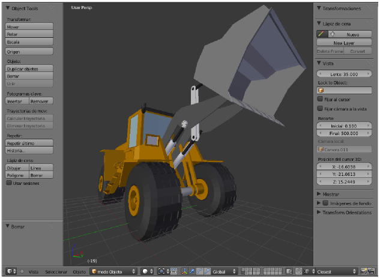
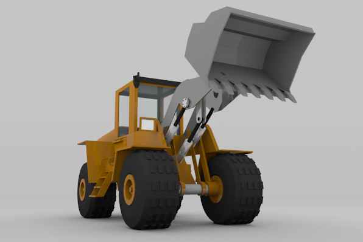
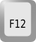
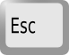
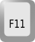
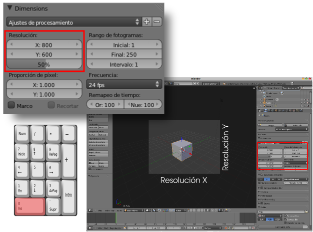

Renderizado
¿Qué es un render? En esencia es la imagen final en la que se materializa un trabajo. Por ejemplo, este es el aspecto de un modelado en el editor Vista 3D...
...pero el producto final es esta otra imagen, la fotografía generada por Blender desde la cámara virtual, en la que aparece de forma evidente todo aquello que hemos decidido en temas de materiales, iluminación, entorno...
La escena por defecto de Blender incluye todo lo necesario para hacer nuestro primer render: objeto, luz y cámara. El camino más corto para hacerlo es el atajo de teclado "F12"...

...pero también es muy usado el botón Imagen de la botonera Render  .
.
Vemos que el editor Vista 3D es sustituido por otro denominado editor UV/Imagen  donde se muestra el resultado del render.
donde se muestra el resultado del render.
Ahora es importante atender a estos dos nuevos atajos de teclado:
- Para regresar al editor Vista 3D basta con pulsar la tecla "Esc".

- Aunque hayamos regresado al editor Vista 3D siempre podemos echar un vistazo al último render con el atajo "F11".

Hay algunos parámetros para
conseguir los renders del tamaño y proporciones deseadas. Como es
lógico, seguimos hablando de campos editables dentro del panel Render  .
.
Sin duda una de las primeras decisiones que debemos tomar es la proporción de ancho por alto. En estos parámetros Blender sólo trabaja con píxeles como unidad de medida. Los campos para introducir los valores deseados son Resolución X (ancho) y Resolución Y (alto). Es muy interesante hacer esta edición desde el punto de vista de la cámara "NumPad 0" ya que se aprecian los cambios en tiempo real y nos ayudará a determinar la proporción adecuada para nuestro proyecto. Bajo estos campos hay un tercero llamado % (50% por defecto). Es verdaderamente útil porque permite renders más pequeños sin necesidad de editar los valores definidos. Por ejemplo en esta captura hemos optado por unos parámetros de 800x600px pero en el render obtenemos una imagen de 400x300px al salir al 50%.
Y la segunda decisión a la que atenderemos es el formato de salida de la imagen (PNG por defecto). En la parte baja de este panel hay una botonera llamada Salida de la que de momento no nos interesa nada más.